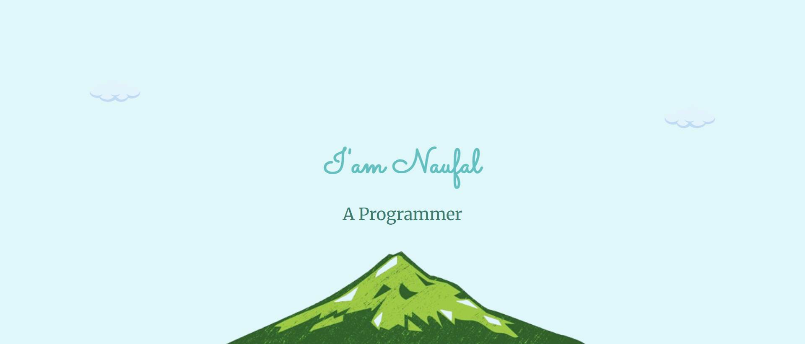

Project
-
 Web Cafe:
Web Cafe:
Ini adalah project saya bersama beberapa teman saya yang bertemakan Cafe.
-

Portofolio:
Sebelumnya saya juga sudah pernah membuat sebuah portofolio dari tugas sekolah.
Seorang remaja di SMKN 2 Pekanbaru yang duduk di kelas XI PPLG. Saya sedang belajar dan terus berusaha agar menjadi pribadi yang lebih baik
Web Cafe:
Ini adalah project saya bersama beberapa teman saya yang bertemakan Cafe.
Sebelumnya saya juga sudah pernah membuat sebuah portofolio dari tugas sekolah.
Terkadang saya suka menulis cerita fantasi dan bermimpi agar bisa membuatnya menjadi animasi.
Saat sedang kosong saya suka mendengarkan musik, terkadang saya juga mendengarkannya sambilan.
Saya terkadang suka membaca, walau sebagian besar itu novel dan komik. Tapi saya juga suka membaca buku pengetahuan terutama tentang astronomi.

Find Me
Download CV